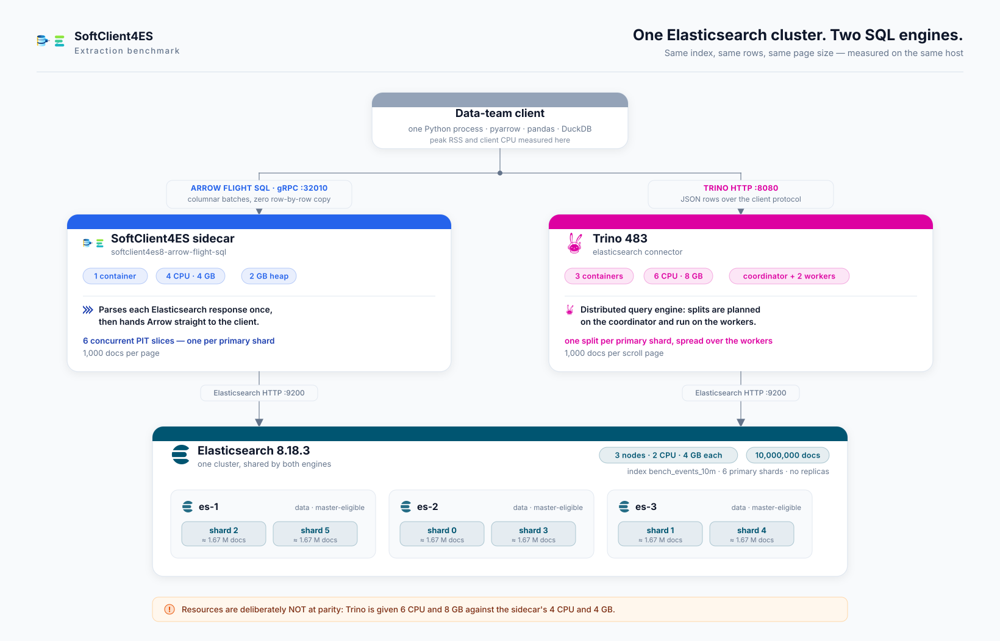

This benchmark measures how efficiently each system extracts data out of Elasticsearch into a Python data-science client (pandas, polars, DuckDB). Both run against the same 3-node Elasticsearch cluster, the same 10-million-row index across 6 primary shards, on the same host, back to back.
GROUP BY returning 100 rows.
SoftClient4ES compiles it into an Elasticsearch aggregation; Trino scans all 10M rows into
its own engine. The one structural result here, against Trino: unchanged in kind at 1 and 6 shards — 25.9 KB and 27.1 KB off the cluster against 1.39 GB — grounded in
the connector's documentation — every other multiple can erode; this one moves only if the
connector changes.
For work Elasticsearch can compute, SoftClient4ES pushes it into the cluster and moves
almost no data off it — and that result leads this report deliberately: it is its one
structural finding against Trino, unchanged in kind at 1 shard and at 6 — the 100-row
answer travels, the 10M rows never do — grounded in the
connector's own documentation and exact by Elasticsearch's own error bounds, where every
wall-clock multiple below is competitive and can erode. It is not a property no one else has:
Elasticsearch's own ES|QL pushes the same aggregation down and ties us on that cell (§4). What
is structural is the difference from a connector that pushes no aggregation down at all. For large extractions it runs in far less client memory,
and it is faster, because it delivers Arrow columnar batches the client consumes directly
where Trino's Python client materialises rows into Python objects.
Trino runs throughout as a 3-node cluster allocated 1.5× our CPU and 2× our
memory — 6 CPUs and 8 GB against the sidecar's 4 and 4, and neither side's server
counts against the client budgets of §5. The handicap buys fairness, not speed, and the CPU
counters say how much of it is used — which depends on the route, so this report states
both. Driven by its documented client, Trino's 55.4 s of engine CPU over a 44.70 s run
average about 1.2 of its 6 CPUs against our 2.4 of 4, and total system CPU (engine plus
Elasticsearch) comes to 85.8 s against our 71.0 s. Driven by connectorx — the route every
multiple here is quoted against — the same cluster averages 2.8 of its 6 CPUs, 47% of its
allocation against our 60%, and total system CPU is 73.8 s against our 71.0 s: parity.
The wide system-cost gap belongs to the documented client, not to Trino. The one column that
favours Trino on every route is Elasticsearch itself — we cost the cluster 42.2 s of
CPU against its 30.4 s on the first-measured cell (35.7 s settled — see the warm-in note in
§2), which over the run is 3.5 of the cluster's 6 CPUs against 0.68 (documented route; 2.2 on
connectorx). Where that cluster
also serves search traffic, it is a real operational trade-off; §A carries it as a limitation.
Resharding from 6 primary shards to 1 costs us 3.50× and Trino 1.23×, so the gap
narrows from 3.75× to 1.32× — nearly all of the headline is shard parallelism, and section 7.1
attributes it on our own side alone, by measuring the same build with concurrent paging on and
off. Read that as a lead, not a moat: sliced paging uses Elasticsearch's public
slice API, available to any engine — Trino's connector already plans one split per
shard. What no pagination strategy changes are the architectural results: the push-down (S3)
and the client cost profile.
Calibration — two reference points, not alternatives. Two things in this report extract faster than either SQL engine. Neither is a candidate for the workload this benchmark is about, and section 8 says why; they are published because a reader who knows Elasticsearch will ask, and an unmeasured question reads as an avoided one.
A hand-written sliced scroll. Six processes taking one Elasticsearch slice each — one per
primary shard — building the same Arrow table we deliver, extract the same 10M rows in
13.76 s against our 11.91 s. Stripped down to merely counting the rows and discarding them,
a cheaper task than either engine performs, it manages 12.46 s — still, narrowly, slower than us. Concurrent paging, new in the release measured here, closed that gap: the floor is no
longer the fastest extraction in this report. It pays
8.5× our client CPU and 4.0× our client memory to build the artifact, which puts it among
the clients that cannot complete in the 2 GB container where we do — but cost is not why it is a
floor rather than an alternative. It is not written in SQL. This report is for
data engineers, analysts and scientists moving Elasticsearch data into pandas, polars, DuckDB or
a BI tool, and for that reader the floor's query is not a query at all: it is a hand-maintained
Elasticsearch Query DSL document — projection, filter, sort, slice and page size as JSON — where
every change to the question is an edit to that JSON. It also cannot aggregate without
re-reading everything (the GROUP BY of S3 costs us 0.043 s and 27.1 KB off the
cluster) and cannot join at all — Elasticsearch has no join, so J0–J2 are not slower on
this floor, they are absent. So the scope is stated rather than implied: this compares SQL
engines over Elasticsearch, for people who work in SQL and dataframes.
Elasticsearch's own query language. Up to and including one million rows, ES|QL extracts faster than either engine here and can hand back Arrow directly — 0.32 s against our 3.99 s — and section 4 publishes those cells, including the ones we lose. On the pushed-down aggregation the two are level (0.034 s against our 0.043 s, inside the noise for cells this small). ES|QL cannot return more than 1,000,000 rows, which is why the ten-million-row scenarios have no ES|QL column. Trino wins every cross-index join measured here — by 7.0%, 12.4% and 22.3% — offers a client that uses less memory than ours, gains the most from shard parallelism on aggregate-heavy work, and provides capabilities — distributed execution, spill, connector breadth — this benchmark does not exercise (section 8).
softnetwork/softclient4es8-arrow-flight-sql:0.3.0
(digest sha256:9dd80b77f62e…), Trino 483 and Elasticsearch 8.18.3.
No number is published that did not come out of a run of the harness.
| SoftClient4ES sidecar | softclient4es8-arrow-flight-sql:0.3.0 — Arrow Flight SQL, gRPC :32010 |
| Trino | 483 (official image), Elasticsearch connector |
| Elasticsearch | 8.18.3 — a 3-node cluster, every node data + master-eligible, quorum of 2 |
| Index | bench_events_10m — 10,000,000 documents, flat mapping, 6 primary shards, 0 replicas, force-merged (974 MB) |
| Host | Apple M4 Max, macOS (Darwin arm64), 16 logical cores; Docker Desktop VM 13 CPU / 32 GB allocated (reports 31.3 GiB) |
| Resources, and the handicap they encode | One SoftClient4ES sidecar: 4 CPU / 4 GB. Trino: a 3-node cluster totalling 6 CPU / 8 GB — 1.5× the CPU and 2× the memory, in every scenario. Elasticsearch: 3 nodes × 2 CPU / 4 GB (heap 2 GB each) |
| Sensitivity topology (§7) | bench_events_10m_s1 — same corpus, same seed, 1 primary shard. The engines are unchanged: only the index topology differs; only one 10M index is open at a time |
| ES|QL | Elasticsearch's own query language, measured as a third stack wherever it can run. Its cells were taken with esql.query.result_truncation_max_size raised from its 10,000 default to 1,000,000 — the product maximum; every ES|QL run records the effective value. |
| Runs | ≥2 warm-ups, then ≥5 measured runs per cell; each run in a fresh client process. Every wall-clock cell in §4 and §7 prints the median with its min–max in brackets; §6's joins publish theirs in a companion table, with all 25 cross-pairings. The §5 sweeps are one run per cell by design — their outcome is binary, completes or killed — so they carry no dispersion; the repeated cells bound run-to-run noise at ≤6%. |

Identical versions on both sides wherever a library is shared.
| Library | Version | Used by |
|---|---|---|
| CPython | 3.12.12 (arm64) | all |
| pyarrow | 25.0.0 | SoftClient4ES (Arrow) |
| adbc-driver-flightsql | 1.12.0 | SoftClient4ES (Flight SQL) |
| adbc-driver-manager | 1.12.0 | ADBC drivers |
| pandas | 3.0.5 (numpy 2.5.1) | both |
| polars | 1.43.2 | both (polars variant) |
| duckdb | 1.5.5 | both (S2) |
| trino | 0.338.0 | Trino (documented client) |
| sqlalchemy | 2.0.51 | Trino (pandas.read_sql / pl.read_database) |
| connectorx | 0.4.5 | Trino (fast columnar client) |
| ADBC Trino driver | 0.5.1 | Trino (ADBC client) |
results/20260821T041841-v030-prewarm: 180 measured runs, one gate, one host
state, and — new to this session — the corpus warmed to a verified steady state before the
first timed block (warm-in.json). Four groups cannot share it because each
rebuilds its own container topology or index, so each is its own session, run the same morning
on the same host and image: S5, S6, the joins, and section 7's 1-shard arm — as is the paging
A/B of §7.1. One session is quarantined whole with a README: a prior attempt whose Trino leg
died because macOS put the host to sleep mid-block; every phase now runs under
caffeinate. Every table names the session it draws on; no table mixes two.
The warm-in — this report's one moving measurement, published against ourselves: the
session opens by extracting the full corpus, untimed, until Elasticsearch's own CPU per pass
stabilises (4 passes, 45.4 → 36.7 → 35.9 → 36.4 s), so no timed block starts cold and a cold
page cache is excluded by construction. Even so, the first timed S1 block measures
11.91 s at 42.2 s of Elasticsearch CPU, and the same cell re-measured at the end
of the session — for both engines — runs 10.04 s at 35.7 s, while Trino moves 0.4%
(44.70 → 44.52 s). The extra cost is server-side (the sidecar also declines, 28.8 → 24.3 s,
consistent with JVM warm-up; client CPU is flat), it decays over repeated identical reads, and
it re-arms: the scroll floors, run between the warm-in and the first block, pushed the sliced
path's Elasticsearch cost back from ~36 to 42 s. The mechanism is not established; what
is established is that it only affects our sliced path, on a build and cluster otherwise
metronome-stable. This report publishes the first-measured block (11.91 s) as the
headline — the state a user meets on a warm cluster — and prints the end-of-session 10.04 s
as the favourable bound it deliberately does not use. Cells measured later in the block
sequence (S1r, S2) sit in the settled state, which is why S1r's 9.97 s is faster than
S1's 11.91 s for strictly more work — the order of measurement, not the workload, separates
them.
Host load, and the throttling counters: the 1-minute load average sampled with every run
had a median of 5.5 and a maximum of 13.2 against 16 logical cores — 2.8 cores uncommitted at
the worst moment; the harness refuses to measure above a configured ceiling. The VM's 13 CPUs
are oversubscribed by the declared limits (16) with asymmetric headroom (ours 10 of 13, Trino's
12 of 13), so this session publishes what the load average cannot see: the cgroup throttling
counters, per run, for every stack — zero throttled periods for either engine and for
Elasticsearch on every 10M-row cell; the one non-zero reading anywhere is Trino's 0.8 s
during the 4.4 s S1m burst. Neither engine's limit ever bound a headline measurement.
Host memory pressure: macOS reported pressure level 1 (normal) on all 180 runs, with
16.7 GB available at the tightest moment. Swap sat flat to the megabyte at 3,810 MB across the
overnight matrix, and equally flat near 9.0 GB during the morning Arrow-floor addendum
(8,922 MB at the minimum and 9,066 MB at the maximum) — memory swapped out before each block,
not paging during it.
time.process_time() in the client process. Peak client memory is the
process's peak physical footprint (ri_lifetime_max_phys_footprint), which is
immune to the macOS memory compressor. One caution when reading across sections: §5's clients
run inside Linux containers, where the instrument is ru_maxrss — within
every scenario both engines share one instrument, so each comparison stands, but memory figures
from §4 and §5 are not on one scale. Engine CPU and Elasticsearch CPU are exact
cumulative counters read from each container's cgroup (cpu.stat/usage_usec),
not sampled. ES wire is the bytes that left the Elasticsearch cluster, computed as the sum
of the three nodes' eth0 transmit counters minus the inter-node transport
traffic they report, so replication is not counted as data delivered to a client. Historically,
measured from container network counters — sampled at the Elasticsearch container itself, in
every table of this report, so the figure never depends on how many containers the engine is
made of. Every run asserts the exact expected row count
before its timing is recorded; a run that returns the wrong number of rows is discarded, not
reported.
| ID | Question it answers | Outcome |
|---|---|---|
| S0 | What does a single-process Python scroll client cost as a reference floor? | 37.0 s to read 10M rows |
| S0p | And a sliced scroll — 6 slices, one per shard, building the same Arrow table? | 13.76 s, for 8.5× SoftClient4ES's client CPU on S1 |
| S1 | Extract 10M rows into a client-side columnar table | 1.23× faster than Trino's fastest client, 3.75× than its documented one; 3.7× and 8.5× less client CPU by route |
| S1m | Extract 1,000,000 rows — the only scale all three stacks reach | ES|QL 0.32 s, SoftClient4ES 3.99 s, Trino 4.42 s |
| S1r | Extract 10M rows into a pandas / polars DataFrame (what an analyst builds) | 1.3–1.6× faster to pandas and 1.2–1.4× to polars than Trino's fastest route; 4.7–5.6× and 4.3–5.1× its documented one (band = position in the block sequence, §4) |
| S2 | Extract 10M rows and compute an aggregate in DuckDB | 4.3–5.1× faster, 8.0× less memory |
| S3 | GROUP BY returning 100 rows | 0.043 s vs 5.50 s, and moves 27.1 KB against 1.39 GB off the cluster |
| S4 | Fetch 100 rows (LIMIT 100) | Parity 37 ms vs 65 ms; ES|QL takes it at 6 ms |
| S5 | Does the extraction fit in a constrained-memory container? | Fits 2 GB; Trino's documented client never fits (OOM at 8 GB), its fastest client 3 GB |
| S6 | How many concurrent extractions fit in an 8 GB budget? | SoftClient4ES 5 (50M rows); Trino 2 with its fastest client, 0 with its documented one |
| J0–J2 | Cross-index JOIN landed as a DataFrame | Trino faster on all three — by 7.0%, 12.4% and 22.3%; SoftClient4ES does 5–23× less client work |
| §7 | How much of the gap is shard parallelism? (6 shards vs 1) | 6→1 shard costs us 3.50×, Trino 1.23×; the gap narrows from 3.75× to 1.32×; peak client memory and pushdown unchanged, client CPU is not |
All scenarios run against one 10-million-row index (bench_events_10m); the JOIN
scenarios also use a 1-million-row index (bench_1m).
A plain Python client that scrolls Elasticsearch and parses each JSON hit. Two shapes: one process with one point-in-time reader, and six processes each taking one Elasticsearch slice — one per primary shard. Each shape is measured twice: counting rows and discarding them is a cheaper task than producing a columnar table, so both also run building the real deliverable — one Arrow table, 10M × 8, the same artifact S1 produces.
| Floor (6 shards) | Wall | Client CPU | Elasticsearch CPU | Peak client memory |
|---|---|---|---|---|
| S0 — one reader, count and discard | 37.00 s [36.76–37.14] | 14.49 s | 45.5 s | 27 MB |
| S0 — one reader, building Arrow | 40.07 s [39.98–40.41] | 17.54 s | 46.7 s | 3,455 MB |
| S0p — 6 slices, count and discard | 12.46 s [12.21–12.94] | 15.97 s | 34.6 s | 165 MB |
| S0p — 6 slices, building Arrow | 13.76 s [13.42–14.25] | 24.13 s | 33.7 s | 3,669 MB |
| SoftClient4ES S1, for comparison | 11.91 s [11.73–12.01] | 2.83 s | 42.2 + 28.8 s sidecar | 921 MB |
| Trino S1 (connectorx), for comparison | 14.66 s [14.51–14.71] | 10.52 s | 32.9 + 40.9 s Trino | 617 MB |
GROUP BY of S3 costs us
0.043 s and costs it a full re-scan, because a script has nothing to push down with. That is the
scope boundary this report states on page 1 rather than leaving a reader to find.
The full 10-million-row result set materialised in the client. SoftClient4ES fetches an Arrow table; Trino's documented client fetches rows.
# SoftClient4ES — Arrow Flight SQL (adbc_driver_flightsql) cur.execute("SELECT id, event_ts, amount, qty, status, country, category, name " "FROM bench_events_10m") table = cur.fetch_arrow_table() # Arrow columnar batches # Trino — documented client (trino.dbapi) cur.execute(same_sql) rows = cur.fetchall() # list of Python tuples
| Metric | SoftClient4ES | Trino | Ratio |
|---|---|---|---|
| Wall median | 11.91 s [11.73–12.01] | 44.70 s [44.46–44.97] | 3.75× faster |
| Client CPU | 2.83 s | 24.05 s | 8.5× less |
| Peak client memory | 921 MB | 4,455 MB | 4.8× less |
| Engine CPU | 28.8 s | 55.4 s | 1.9× less |
| Elasticsearch CPU | 42.2 s | 30.4 s | 1.39× more |
| ES wire | 2.54 GB | 2.92 GB | — |
| Rows / columns | 10,000,000 / 8 | 10,000,000 / 8 | ✓ |
_source filtering, per-hit metadata, the scroll-versus-PIT envelope)
have not been separated; a capture of each engine's _search requests is queued, and
until then this report notes the gap rather than explaining it.
Trino's documented client is not its only option, and it is its slowest. connectorx (a Rust engine that parses Trino's result pages straight into columnar buffers) and the ADBC Trino driver both return an Arrow table. Measured on the same query:
| Route | Wall | Client CPU | Peak memory |
|---|---|---|---|
| SoftClient4ES — Arrow Flight SQL | 11.91 s [11.73–12.01] | 2.83 s | 921 MB |
| Trino — connectorx | 14.66 s [14.51–14.71] | 10.52 s | 617 MB |
| Trino — ADBC driver | 26.97 s [26.87–27.01] | 18.64 s | 1,963 MB |
| Trino — documented client | 44.70 s [44.46–44.97] | 24.05 s | 4,455 MB |
The artifact a data scientist actually builds. Each side uses its most idiomatic route to a
pandas.DataFrame, and separately to a polars.DataFrame.
# SoftClient4ES df = cur.fetch_arrow_table().to_pandas() # pandas df = pl.from_arrow(cur.fetch_arrow_table()) # polars # Trino df = pandas.read_sql(sql, sqlalchemy_conn) # pandas, via the trino SQLAlchemy dialect df = pl.read_database(sql, sqlalchemy_conn) # polars
| Route | Wall | Client CPU | Peak memory |
|---|---|---|---|
SoftClient4ES (to_pandas()) | 9.97 s [9.76–10.01] | 2.67 s | 1,481 MB |
SoftClient4ES (pd.ArrowDtype) | 9.95 s [9.94–10.17] | 2.63 s | 919 MB |
| Trino — connectorx | 15.52 s [14.98–15.71] | 11.54 s | 2,824 MB |
| Trino — ADBC driver | 27.29 s [27.08–27.42] | 18.88 s | 2,542 MB |
| Trino — SQLAlchemy (documented) | 56.13 s [55.86–56.18] | 35.30 s | 8,079 MB |
Against Trino's documented route that is 5.6× faster on 13.2× less CPU and 5.5× less memory; against its fastest route, 1.6× faster on 1.9× less memory. Read those two multiples as a band, not a point. Unlike S1, this cell was measured in the settled state (it ran later in the block sequence), so it carries the favourable end of the warm-in §2 describes; place our cell where S1's first block sat and the same comparisons read 4.7× and 1.3×. Trino's own position effect over the session is 0.4%, so the band is ours, not theirs. Both of our dtype backends are published rather than the flattering one: Arrow-backed dtypes cost nothing on wall clock this session (9.95 s against 9.97 s) and save 562 MB — the route a memory-bound analyst should take.
| Route | Wall | Client CPU | Peak memory |
|---|---|---|---|
SoftClient4ES (pl.from_arrow) | 10.94 s [10.52–11.25] | 11.31 s | 2,484 MB |
| Trino — connectorx | 15.34 s [14.89–15.45] | 11.64 s | 2,186 MB |
| Trino — ADBC driver | 28.20 s [27.96–28.82] | 28.17 s | 3,551 MB |
| Trino — SQLAlchemy (documented) | 56.04 s [55.85–56.34] | 34.95 s | 11,047 MB |
The same fetch, landed in DuckDB and aggregated. SoftClient4ES registers the Arrow table zero-copy; Trino builds a DataFrame from rows and registers that.
# SoftClient4ES con.register("events", cur.fetch_arrow_table()) # zero-copy con.execute("SELECT category, AVG(amount) FROM events GROUP BY category") # Trino df = pandas.DataFrame(cur.fetchall(), columns=cols) con.register("events", df) con.execute(same_agg)
| Metric | SoftClient4ES | Trino | Ratio |
|---|---|---|---|
| Wall median | 10.32 s [10.25–10.48] | 52.95 s [52.86–53.39] | 5.1× faster |
| Client CPU | 3.70 s | 32.45 s | 8.8× less |
| Peak client memory | 944 MB | 7,510 MB | 8.0× less |
GROUP BY returning 100 rowsSELECT category, COUNT(*), AVG(amount) FROM bench_events_10m GROUP BY category, returning 100 groups.
| Metric | SoftClient4ES | Trino |
|---|---|---|
| Wall median | 0.043 s [0.036–0.046] | 5.50 s [5.42–5.61] |
| ES wire | 27.1 KB | 1.39 GB |
| Elasticsearch CPU | 0.1 s | 21.3 s |
| Rows | 100 | 100 |
The same answer, not merely the same row count. A terms aggregation is
approximate when its bucket size is too small, so "100 groups" is not by itself evidence that the
pushed-down result matches a full scan. Every session gates on the values: all 100
(category, COUNT, AVG(amount)) triples are compared across the three stacks — identical counts,
averages equal to within 1e-9 — and Elasticsearch reports
doc_count_error_upper_bound = 0 and sum_other_doc_count = 0, its own
statement that no bucket is missing and no document fell outside the returned buckets.
GROUP BY into an Elasticsearch
terms aggregation: the cluster computes the 100 groups and returns only those 100
rows — 27.1 KB of aggregation response against the 1.39 GB Trino reads to compute the same
answer, at 0.1 s of cluster CPU against 21.3 s and 0.043 s of wall against 5.50 s — the byte
ratio is spectacular, but it is a ratio of bytes, not of time; the time columns are the claim.
Trino's Elasticsearch connector performs predicate push-down only, so it scans all 10M rows into
Trino and aggregates there.1 This is the clearest architectural
difference in the benchmark — for work Elasticsearch can do, SoftClient4ES does not move the
data at all.
doc_count_error_upper_bound = 0. It moves only if
the connector itself changes. A reader who takes one number from this benchmark should take
this one, not the 3.75×.
1 The connector's own documentation for the version measured
(trino.io/docs/483/connector/elasticsearch.html, consulted 2026-08-22) documents a
Predicate push down section and no aggregation push-down of any kind; the 1.39 GB it
reads off the cluster for a 100-row answer is this benchmark's measurement of that. It is the
one load-bearing statement here that rests on a source rather than on a session artifact, so the
source is named.
Elasticsearch's own query language cannot return more than 1,000,000 rows, so this is the largest
result set on which SoftClient4ES, Trino and ES|QL can be compared like for like. Same eight
columns, same index, LIMIT 1000000 on every stack.
| Route | Wall | Client CPU | Peak client memory | Bytes off the cluster |
|---|---|---|---|---|
ES|QL, format=arrow | 0.32 s [0.28–0.34] | 0.05 s | 165 MB | 72 MB |
ES|QL, format=json | 0.98 s [0.95–1.07] | 0.50 s | 666 MB | 86 MB |
| SoftClient4ES, Arrow Flight SQL | 3.99 s [3.97–4.05] | 0.19 s | 176 MB | 253 MB |
| Trino, documented client | 4.42 s [4.40–4.46] | 2.23 s | 475 MB | 308 MB |
doc_values, columnar on
disk, while both engines read _source and pay a JSON parse per document.
The wire explains the ordering. For the same million rows SoftClient4ES moves
253 bytes per row off the cluster against Trino's 308 bytes, at the same cost per byte as
its own ten-million-row run, which moves 254 bytes per row. The million-row figure is the ten-million-row
behaviour at one tenth the scale, not a different regime.
A benchmark of two SQL engines over Elasticsearch that never measures what Elasticsearch itself
can do invites an obvious question. So it is measured, over both of its wire formats: the
row-shaped format=json every ES|QL client speaks, and format=arrow,
which returns an Apache Arrow IPC stream.
| Scenario | ES|QL (arrow) | ES|QL (json) | SoftClient4ES | Trino |
|---|---|---|---|---|
| S1m — 1,000,000 rows | 0.32 s [0.28–0.34] | 0.98 s [0.95–1.07] | 3.99 s [3.97–4.05] | 4.42 s [4.40–4.46] |
S3 — GROUP BY, 100 rows | 0.034 s [0.033–0.035] | 0.034 s [0.033–0.062] | 0.043 s [0.036–0.046] | 5.50 s [5.42–5.61] |
S4 — LIMIT 100 | 0.006 s [0.006–0.007] | 0.006 s [0.006–0.006] | 0.037 s [0.031–0.040] | 0.065 s [0.056–0.067] |
| S1, S2, S5, S6 — 10,000,000 rows | cannot run | cannot run | ✓ | ✓ |
All four columns are the same session as the sections above.
esql.query.result_truncation_max_size defaults to 10,000 rows and is declared with a
hard maximum of 1,000,000; Elasticsearch refuses a higher value outright. Ask for ten million rows
with the setting at its maximum and the response is 1,000,000 rows, HTTP 200, and no
Warning header — a truncated answer that looks like a complete one, recorded as
esql-truncation-probe.json in the session directory. Not a licence gate: the cluster
measured here runs a basic licence. For result sets under a
million rows, ES|QL is an excellent answer and this benchmark is not the argument for anything
else. The second boundary is the join. LOOKUP JOIN does not join two fact
indices: it resolves only against an index in lookup mode, and such an index is
restricted to a single shard — a dimension table. Asked for this benchmark's cross-index
join it answers 400 — invalid [bench_1m] resolution in lookup mode to an index in
[standard] mode, so section 6's joins have no ES|QL column either: not that it is slower,
but that the shape is outside what the feature accepts.
LIMIT 100)The control: when the result is small, the client representation stops mattering.
| Metric | SoftClient4ES | Trino |
|---|---|---|
| Wall median | 0.037 s [0.031–0.040] | 0.065 s [0.056–0.067] |
(category, cnt, AVG(amount)) triples, key by key and value by value: they
agreed exactly on the counts and to within 1e-9 on the averages. And on COUNT,
SUM(id), SUM(qty) and
SUM(amount) over the whole index — the check that the extraction paths see the
same 10,000,000 documents, not merely the same number of them: all three agreed on all four.
Elasticsearch's own error bounds
for the terms aggregation were doc_count_error_upper_bound = 0 and
sum_other_doc_count = 0 — the aggregation is exact at this shard count and bucket
size, not merely close.
The client runs inside a container with a hard memory cap (docker run --memory,
swap pinned equal so the kernel kills rather than pages). The question is binary: does landing
10M rows as a DataFrame complete, or is the process killed?
| Container cap | SoftClient4ES | Trino (documented) | Trino (connectorx, fastest) |
|---|---|---|---|
| 8 GB | completes 10.9 s · 1,537 MB | OOM-killed | completes 13.1 s · 2,911 MB |
| 6 GB | completes 11.3 s · 1,535 MB | OOM-killed | completes 13.4 s · 2,909 MB |
| 4 GB | completes 10.7 s · 1,533 MB | OOM-killed | completes 12.6 s · 2,912 MB |
| 3 GB | completes 10.7 s · 1,541 MB | OOM-killed | completes 13.4 s · 2,909 MB |
| 2 GB | completes 11.4 s · 1,531 MB | OOM-killed | OOM-killed |
The whole table comes from one sweep per client. "OOM-killed" is the kernel killing the client — exit 137 — in every cell above, verified per cell.
Streaming, where neither side holds the whole result — SoftClient4ES via
fetch_record_batch(), Trino via pandas.read_sql(chunksize=…). This is
the workflow a competent Trino user reaches for first, so it is a table rather than a footnote:
| Container cap | SoftClient4ES | Trino (documented) |
|---|---|---|
| 8 GB | completes 10.9 s · 156 MB | completes 58.5 s · 312 MB |
| 6 GB | completes 10.8 s · 153 MB | completes 58.5 s · 313 MB |
| 4 GB | completes 10.8 s · 154 MB | completes 58.8 s · 314 MB |
| 3 GB | completes 10.7 s · 155 MB | completes 59.2 s · 315 MB |
| 2 GB | completes 10.8 s · 153 MB | completes 58.6 s · 312 MB |
Both complete at every cap. SoftClient4ES is 5.4–5.5× faster on 2.0× less memory — a smaller and more representative difference than the binary one above, and the one that applies whenever the workflow does not need the whole result set in memory at once.
An 8 GB total client budget, split evenly across N clients launched simultaneously, each extracting 10M rows. How many complete with the correct row count? Measured against both of Trino's clients — the documented one it ships and connectorx, the fastest it has, which S1 already grants it.
| Engine | N | Cap each | Completed | Wall |
|---|---|---|---|---|
| SoftClient4ES | 1 | 8,192 MB | 1 / 1 | 11.2 s |
| SoftClient4ES | 2 | 4,096 MB | 2 / 2 | 17.7 s |
| SoftClient4ES | 3 | 2,730 MB | 3 / 3 | 25.0 s |
| SoftClient4ES | 4 | 2,048 MB | 4 / 4 | 34.4 s |
| SoftClient4ES | 5 | 1,638 MB | 5 / 5 | 42.8 s |
| Trino — connectorx | 1 | 8,192 MB | 1 / 1 | 13.6 s |
| Trino — connectorx | 2 | 4,096 MB | 2 / 2 | 21.0 s |
| Trino — connectorx | 3 | 2,730 MB | 0 / 3 | killed |
| Trino — documented client | 1 | 8,192 MB | 0 / 1 | killed |
One run per level, like the S5 sweeps: the measured outcome is how many clients complete with the correct row count, not a wall-clock median, so these rows carry no dispersion.
A join between a 1M-row index (bench_1m) and the 10M-row index, landed as a pandas
DataFrame on both sides. Both engines execute the join server-side (SoftClient4ES in an embedded
DuckDB, Trino in its own engine).
-- J0 plain join (1,000,000 rows out) SELECT a.id, b.amount FROM bench_1m a JOIN bench_events_10m b ON a.id = b.id -- J1 + predicate on the large leg (125,044 rows out) SELECT a.id, b.amount FROM bench_1m a JOIN bench_events_10m b ON a.id = b.id WHERE b.status = 'paid' -- J2 + GROUP BY (100 rows out) SELECT b.category, COUNT(*), AVG(b.amount) FROM bench_1m a JOIN bench_events_10m b ON a.id = b.id GROUP BY b.category
| Scenario | SoftClient4ES wall | Trino wall | Client CPU (SC4ES / Trino) |
|---|---|---|---|
| J0 — plain join | 7.99 s | 7.43 s (7.0% faster) | 0.05 s / 1.16 s |
J1 — + WHERE | 3.93 s | 3.44 s (12.4% faster) | 0.02 s / 0.19 s |
J2 — + GROUP BY | 8.56 s | 6.66 s (22.3% faster) | 0.01 s / 0.05 s |
Medians of 5 runs, as everywhere else. These are small differences, so the spread belongs next to them — and each engine's 5 runs are compared against the other's 5, 25 pairings per scenario, so the ordering does not rest on the medians alone:
| Scenario | SoftClient4ES min–max | Trino min–max | Runs won, of the 25 pairings |
|---|---|---|---|
| J0 | 7.85–8.16 s (3.9%) | 7.41–7.63 s (2.9%) | Trino 25 / 25 |
| J1 | 3.91–3.95 s (1.1%) | 3.39–3.50 s (3.1%) | Trino 25 / 25 |
| J2 | 8.53–8.62 s (1.0%) | 6.52–7.03 s (7.6%) | Trino 25 / 25 |
GROUP BY of J2 costs Trino less than nothing
(J2 is 0.77 s faster than its own J0) against +0.57 s for us. The one axis that runs our
way is client cost — 5–23× less client-side work — but on a join returning 100 rows that
is a small absolute saving and does not offset the wall clock. J0 and J2 come from one block in
which both engines were measured together, warm — all three scenarios in one counter-balanced
block, both join legs pre-warmed. An earlier block in which Trino's J2
degraded 37% across its own runs is quarantined, and discarding it made Trino's win larger.
Everything above was measured on a 6-shard index. Trino's Elasticsearch connector creates one split per shard, so the natural question is how much of the gap is shard parallelism — and whether either engine actually exploits it.
Both do. They do not exploit it equally.
system.runtime.tasks during the scan recorded 6 splits on the 6-shard index, 3 on each worker and none on the coordinator, against 1 split on
the other, none on the coordinator.
| Metric | SoftClient4ES 1 shard | 6 shards | Trino 1 shard | 6 shards |
|---|---|---|---|---|
| S1 wall | 41.69 s [40.93–65.60] | 11.91 s [11.73–12.01] | 55.11 s [54.18–56.17] | 44.70 s [44.46–44.97] |
| S1 client CPU | 3.56 s | 2.83 s | 24.29 s | 24.05 s |
| S1 peak client memory | 922 MB | 921 MB | 4,473 MB | 4,455 MB |
| S1 Elasticsearch CPU | 25.4 s | 42.2 s | 28.7 s | 30.4 s |
| S1 ES wire | 2.53 GB | 2.54 GB | 2.96 GB | 2.92 GB |
S3 wall (GROUP BY, 100 rows) | 0.038 s [0.033–0.045] | 0.043 s [0.036–0.046] | 28.54 s [28.42–29.73] | 5.50 s [5.42–5.61] |
| S3 ES wire | 25.9 KB | 27.1 KB | 1.43 GB | 1.39 GB |
GROUP BY still moves 27.1 KB off the
cluster against 1.39 GB — the 100-row answer itself. Six
shards do not change it — the Trino cluster is identical in both columns — because the connector
pushes no aggregation down: it reads all 10 million rows whatever the topology, and merely reads
them faster.
Its aggregation wall-clock improves 5.2× (28.54 s → 5.50 s), by far the largest single improvement measured in this benchmark for either engine. Scan parallelism is exactly what a multi-shard index gives Trino, and on aggregate-heavy work it converts directly into wall-clock.
Both ES-wire columns in this section are measured at the Elasticsearch container itself — bytes that left the cluster — which matters here because with a three-node Trino the coordinator's own counter sees only a fraction of the scan.
Section 7 shows the gap widening with shards. This subsection attributes it, by holding everything constant except one setting on our own side.
SoftClient4ES pages a no-ORDER BY, no-LIMIT extraction with
min(primary shards, max-slices) concurrent point-in-time slices. The shipped default
max-slices = 8 resolves to 6 on this index; setting it to 1 restores a single
sequential reader. Same image, same cluster, same corpus, minutes apart. Which branch each arm
took was observed, not assumed — the sidecar reports its slice count per extraction, and
each arm asserts on it before measuring:
sequential arm: PIT search_after completed (1 slice(s))
sliced arm: PIT search_after completed (6 slice(s))| Cell | Sequential (1 slice) | Sliced (6 slices) | Gain |
|---|---|---|---|
| S1 — extract 10M rows | 35.34 s [35.09–39.42] | 10.48 s [10.14–10.58] | 3.37× |
| S2 — 10M rows into DuckDB | 36.97 s [36.06–38.76] | 14.49 s [13.31–15.43] | 2.55× |
S3 — GROUP BY (control) | 0.03 s | 0.03 s | — |
S4 — LIMIT 100 (control) | 0.02 s | 0.02 s | — |
| S1 engine CPU | 21.4 s | 25.7 s | +20% |
| S1 Elasticsearch CPU | 53.1 s | 37.4 s | −30% |
Scope. Slicing applies to extractions without ORDER BY or LIMIT,
which is the shape of every large extraction in this report. An ordered or bounded query still
pages sequentially, and a 1-shard index cannot slice at all — min(1, 8) = 1 — which
is the other reason section 7's 1-shard column is what it is.
Two things in this report extract faster than either SQL engine. Neither is a candidate for the workload this benchmark is about: one stops at a million rows and cannot join two fact indices, the other is a hand-maintained Query DSL document. They are measured and published because a reader who knows Elasticsearch will ask about them, and an unmeasured question reads as an avoided one. They calibrate the scale; they do not compete on it.
doc_values while both SQL engines read _source and pay a JSON parse
per document. The whole S1m gap between its Arrow route and ours is 3.67 s per million
rows — an upper bound on what that leg can be worth, since the two routes also differ in
where they run. It is the largest identified item left on our extraction path: a roadmap
line, not a defeat.GROUP BY wall-clock improves 5.2× (28.54 s → 5.50 s going from 1 shard to 6),
the largest single gain either engine showed in this benchmark. It still moves 1.39 GB off
the cluster to get there.GROUP BY costs Trino less than
nothing (J2 is 0.77 s faster than its own J0) against +0.57 s for us.elasticsearch.scroll-size from its default 1000 to 5000 improves Trino's S1
wall clock from 44.70 s to 44.41 s — 0.7%. On this cluster the knob has almost
nothing left to give, which is consistent with Trino being bound by its own row processing
rather than by paging. The headline tables pair product default against product default.Prerequisites: Docker (VM ≥ 13 CPUs / ≥ 32 GB RAM — the measured configuration), a native CPython 3.12, and ≥ 32 GB host RAM — the client runs on the host, and Trino's documented client materialises 10M rows into Python objects.
python3.12 -m venv .venv .venv/bin/pip install -r requirements.txt # Bring up Elasticsearch and load the data (deterministic; ~3 minutes) docker compose up -d elasticsearch .venv/bin/python generator/generate_and_load.py # Bring up both engines docker compose up -d flight-sql trino # The published matrix is three scripted phases, not four commands: 180 measured # runs over ~16 orchestrate invocations, every arm tagged so it cannot blend into # another's median. Medians of 5 runs after 2 warm-ups throughout. # Phase 1 — floors S0/S0p; S1/S1m/S1r/S2/S3/S4 on both engines; Trino's connectorx # and ADBC routes; every S1r destination on both sides; ES|QL on both wire formats # plus its truncation and join probes; the tuned-Trino (scroll-size=5000) and # hostname-dial arms; the four-layer connect probe; the drift control, last. # Refuses to measure unless the equivalence gate PASSes, then WARMS THE CORPUS to a # verified steady state (warm-in.json) before the first timed block. /bin/bash runners/run_full_session.sh # Phase 2 — S5 memory cap and S6 concurrency, each on two client routes, then # J0–J2 behind wait_engines_idle.py (a join block once timed on top of Trino's # unfinished work and was discarded; the gate is why that cannot recur). /bin/bash runners/run_full_session_phase2.sh # Phase 3 — section 7: the corpus regenerated from the same seed into 1 shard, # its own equivalence gate, and a live system.runtime.tasks split probe. /bin/bash runners/run_full_session_phase3.sh # Re-derive every published figure from the artifacts; non-zero exit on any # disagreement between the documents, the report and the runs. .venv/bin/python runners/verify_claims.py
Results are written under results/<session>/, one JSON per run, with the
environment and the sidecar image digest captured automatically. session.log is the
authoritative record of what ran, in order, with timestamps.
--limit) scale.
To reproduce the full 10M-row scenarios: a time-limited Enterprise evaluation licence for
deeper testing is available on request, with no contractual obligation attached — write to
sales@softclient4es.com.
The data path under test:
Elasticsearch → row-serialized documents out of the cluster (the _search / _sql path
both engines read; ES|QL's columnar Arrow output is a third path,
measured separately and capped at 1,000,000 rows)
→ SoftClient4ES: converted to Arrow ONCE at the sidecar, streamed as
Arrow batches, consumed by the client with no further deserialization
→ Trino: parsed into Trino's columnar pages, re-serialized to Trino's
row-oriented client protocol, re-parsed value-by-value in the client
Every client pays an Elasticsearch serialization leg. Nothing leaves the cluster
unserialized, and this benchmark never claims to avoid that step. For the SQL and JDBC path it
is about, that serialization is row-shaped: _search returns JSON, and the
SQL endpoint offers CSV, TSV, YAML and the binary CBOR and Smile — every one of them a
row-serialized document encoding.
One Elasticsearch format is columnar, and it is measured here rather than glossed over:
ES|QL's format=arrow returns an Apache Arrow IPC stream (verified on Elasticsearch
8.18.3), and below its ceiling it extracts faster than either engine in this benchmark —
though not on the pushed-down aggregation, where the two are level — 0.034 s
for ES|QL against our 0.043 s. Both of its wire formats land on the same median there, so
best-route discipline costs nothing to apply: the number is 0.034 s either way. At that
magnitude the two five-run intervals overlap — ES|QL 0.033–0.062 s, ours 0.036–0.046 s — so
section 8 records it as a tie. That ceiling
is why it appears in three scenarios and not in the rest:
esql.query.result_truncation_max_size defaults to 10,000 rows and is declared with
a hard maximum of 1,000,000, so ES|QL cannot return a ten-million-row result at all — and above
the configured ceiling it truncates with HTTP 200 and no Warning header.
What this benchmark measures is what happens after the serialization leg, on the path a SQL client takes: SoftClient4ES serializes to Arrow once and the client consumes that columnar buffer directly, while Trino re-serializes to a row protocol the client must parse again.
So this benchmark measures large result-set extraction and client-side consumption — wall-clock, client CPU, peak client memory — which is where the client representation dominates. It does not measure Elasticsearch-side query execution (I/O, scoring), where the wire format is irrelevant.
bench_events_10m back to
back.ARROW_BATCH_SIZE=1000 equals Trino's
elasticsearch.scroll-size=1000. Both are product defaults, pinned explicitly so the setting can be checked.adbc_driver_flightsql Arrow Flight SQL driver; Trino with its own
trino Python package, and — for the fairness comparison in S1/S1r — with its fastest
available clients (connectorx and the ADBC Trino driver). No SoftClient4ES-specific client code is used.legacy_primitive_types would return
unparsed strings, deferring the parse rather than avoiding it, and is not used.-O,
so the asserts always execute.time.perf_counter() around connect → materialized result.
Connection setup is included because it is time the user waits. Every stack dials an IP
literal, so no arm resolves a name. Trino's Python clients resolve through the OS
resolver; the Go ADBC driver uses grpc-go's own, which ignores /etc/hosts. A
four-layer connect probe separates the cost: bare TCP 0.07 ms, the
Flight C++ layer 1.64 ms, the Go ADBC layer dialling an IP 3.01 ms, and the same layer
dialling a name 16.07 ms — a ≈13 ms resolver tax that belongs to the driver, not the
protocol, with a 5 s DNS timeout behind it (softclient4es-arrow#151). The scale decides
whether that matters: invisible against a ten-million-row extraction (13 ms against 11.91 s),
but the whole result on the 100-row control. Both dials are measured and both published: by IP, S4 is 0.037 s against
Trino's 0.065 s; by name it is 0.054 s. The name lookup does not invert that control, but it
closes most of it. Published as a deployment note — with the Go driver, dial an
address or reuse the connection.time.process_time() for the client process — the CPU spent
turning the wire format into usable values.ri_lifetime_max_phys_footprint, which includes compressed pages and is
therefore immune to the macOS memory compressor (plain RSS under-reports under memory
pressure). On Linux (the §5/§6 containers) the harness falls back to ru_maxrss —
a different instrument, which is why §4 and §5 memory figures are never quoted on one
scale.cpu.stat/usage_usec, an exact counter; the throttling
counters come from the same file) for the whole 6-shard matrix — floors, S1, S1m, S1r,
S2, S3, S4 — and for §7's topology arm and §7.1's paging A/B. The tables print it where it
carries a claim (the floors, S1, S3, §7, §7.1); on the remaining cells it is in the session
records rather than in the prose, and §7.1's cross-reference to S2's 35.5 s comes from there.
Three groups are the exception: S5, S6 and the joins rebuild container topologies
mid-run, so they stay client-side only — reading those rows as total system cost is
unsupported. The push-down is not credited with bytes alone: S3 publishes its cluster
CPU (0.1 s against 21.3 s) beside the bytes precisely so it does not have to be.GROUP BY into an Elasticsearch aggregation, while Trino's
connector performs predicate pushdown only and scans all rows. S3 is never a wire-format result.node-scheduler.include-coordinator=false), so its
distributed execution is exercised; what is not, is scale-out across machines, over a
real network, with spill-to-disk or fault tolerance in play. Elasticsearch is also a real
3-node cluster (3 × 2 CPU), so the splits and slices are served by independent nodes; what is
untested is a larger cluster. Those are real strengths of
Trino that an extraction benchmark on one host cannot show.nr_throttled/throttled_usec, in the same
cpu.stat file the CPU figures come from) that would settle whether any container
hit its limit during a run are captured per run in this session, for every stack, and §2
publishes the verdict: zero throttled periods for either engine and for Elasticsearch on
every 10M-row cell, with Trino's single 0.8 s blip during the 4.4 s S1m burst. The residual
caveat is the VM-level oversubscription itself, which cgroup counters cannot see; the load
average and the flat swap band bound it.elastic.scroll.max-slices = 1 turns it off.max-slices = 8 is never reached here: the index has 6 primary shards, so every
sliced run uses 6. What happens past the default — 12 or 24 shards against a cap of 8 — is
unmeasured, so the 3.37× of §7.1 should not be extrapolated beyond the point where the default
saturates.terms on a keyword field with COUNT and AVG.
date_histogram, multi-level GROUP BY, HAVING, and above
all COUNT(DISTINCT) are unmeasured — the latter matters because it maps to
Elasticsearch's cardinality aggregation, which is approximate by
construction, where Trino's count(distinct) is exact: a correctness
divergence the equivalence gate does not yet test (it gates COUNT,
SUM, AVG). Extending the gate and the matrix to it is queued.long, date,
double, integer, keyword). The client-side cost of a wire format is
a function of column count and type mix, and only one point on that curve is measured. Nothing
here establishes how the gap moves for two columns or eighty.usage_usec read inside each container
(the engine's containers summed — Trino is three — and Elasticsearch separately), which is
exact for the interval rather than a sampled percentage. In this campaign it covers every cell
of the main session (floors, S1, S1m, S1r, S2, S3, S4 — throttling counters included),
the topology arm and the paging A/B. S5, S6 and the joins remain client-side only — their
harnesses rebuild container topologies mid-run — so reading those rows as total system
cost is unsupported.results/<session>/ —
one JSON per run carrying its wall, CPU, memory, wire bytes, host load and memory-pressure
reading, alongside the equivalence gate, the ES|QL truncation and join probes, the connect
probe, the engine-quiescence records and the sidecar image digest. The dispersion behind every
median, the gates that had to pass before a number was kept, and the state of the host while
it was measured are all auditable without a licence. That is not reproduction, and it is not
nothing — and reproduction itself is a request away: a time-limited Enterprise evaluation
licence is available by writing to sales@softclient4es.com (§9), no contractual
obligation attached.system.runtime.tasks on both topologies: 6 splits across two workers on the
6-shard index, 1 split on the 1-shard one. Both engines get faster with shards, very unequally:
ours 3.50×, Trino's 1.23×, so the S1 gap widens from 1.32× to 3.75×. Peak
client memory (±0.3%) does not move; our client CPU does (3.56 s → 2.83 s — section 7 explains
the scheduling); the
GROUP BY still moves 27.1 KB against 1.39 GB. Trino's own largest gain in the whole
benchmark appears there too — its aggregation wall-clock improves 5.2× — and is published
as such. Section 7.1 then attributes our share of it on our own side alone:
the same build with concurrent paging disabled takes 35.34 s against 10.48 s, so the feature is
worth 3.37×, with the non-paging controls identical across arms.
Building this benchmark surfaced several issues in SoftClient4ES. All were fixed, and the results
in this report were measured on the released 0.3.0 build that contains the fixes.
ORDER BY,
the streaming pager injected _shard_doc as the primary sort. From Elasticsearch 8 /
Lucene 9 onward this defeats the document-id skip optimisation, so each page re-scanned the whole
index instead of seeking to the next position — about 60 ms/page instead of 8 ms/page on the
10M-row index, an effect that grows with index size. The fix uses _doc as the sort
under a point-in-time context (which Elasticsearch turns into a total order via an automatic
tiebreaker), restoring efficient paging while keeping results complete. A multi-shard completeness
test guards against regression.LIMIT
it was executed in full, so a bounded extraction read every row off Elasticsearch twice.
The probe now reads at most 100 rows and never more than the statement asked for, and
aggregation-shaped statements — where the limit is the bucket count, not a row count — are left
untouched.A family of cases silently returned incomplete results and were corrected:
GROUP BY without LIMIT returned only the first ~10 groups (the default aggregation size).PARTITION BY truncated to the first ~10 partitions.SELECT without LIMIT on the non-scroll path returned only the first ~10 rows.LIMIT above index.max_result_window failed while the same query with no LIMIT succeeded.Each now returns the complete result set, and each is covered by a multi-shard completeness test. These matter for a benchmark because a silently truncated result would otherwise look like a fast, correct run.
Extraction rows previously carried Elasticsearch hit-metadata columns (_id,
_index, _score) in addition to the selected columns. Rows now contain
exactly the columns the SQL projects, so the client receives — and pays for — only the requested
data (8 columns for the S1 query).
The published sidecar image originally shipped without a logging configuration, which caused it to log at DEBUG and write every Elasticsearch response byte to the container log — a large performance and data-exposure problem. The image now ships a logging configuration that keeps wire-level logging off by default; the benchmark runs the sidecar as shipped.